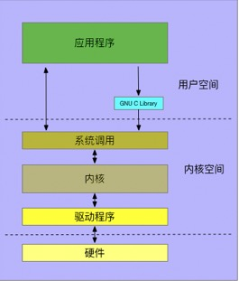
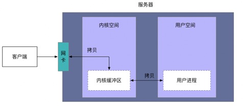

本文简单的记录了网编编程相关的一些基础知识。
在开始学习网络编程之前，先了解一些Linux的基础知识。
系统编程

上图是Linux简单的系统架构图（不一定准确）。应用程序与内核的交互是通过Linux内核提供的系统调用了来实现的。在应用程序中可以直接调用内核提供的API，也可以使用C语言标准库中对内核中API进一步进行封装的API。
1 文件IO
文件的基本操作：打开文件、读文件、写文件等。常用的函数有open, read, write, lseek, close
1.2 数据包的流转路径

首先是网卡收包，然后交给内核协议栈，最后数据到达用户进程。
1.2.1 网卡收包
从整体上来说，网卡收包是网线中的高低电平转换到网卡FIFO存储然后再拷贝到主内存的过程。网卡需要有驱动才能工作，驱动是加载到内核中的模块，负责衔接网卡和内核的网络模块。驱动在加载的时候将自己注册进内核的网络模块，当相应的网卡收到数据包时，网络模块会调用相应的驱动程序处理数据。具体过程如下：
- 客户端发送的数据包从网卡进来，网卡将数据包通过DMA的方式写入到指定的内存地址，该地址由网卡驱动分配并初始化。
- 之后网卡通过硬件中断（IRQ）通知CPU，告诉它有数据来了。CPU根据中断表，调用已经注册的中断函数，这个中断函数会调到网卡驱动程序中相应的函数。驱动先禁用网卡的中断，表示驱动程序已经知道内存中有数据了，告诉网卡下次再收到数据包直接写内存就可以了，不要再通知CPU了，这样可以提高效率，避免CPU不停的被中断。
- 再之后网卡驱动程序启动软中断，这个软中断会被内核中的ksoftirqd进程处理，该进程在收到软中断后，就会调用相应软中断所对应的处理函数，在这里ksoftirqd进程会调用网络模块的net_rx_action函数。net_rx_action调用网卡驱动里的poll函数来一个一个的处理数据包，在pool函数中，驱动会一个接一个的读取网卡写到内存中的数据包，在驱动程序中会将内存中的数据包转换成内核网络模块能识别的skb格式，然后调用napi_gro_receive函数
- napi_gro_receive会处理GRO相关的内容，也就是将可以合并的数据包进行合并，这样就只需要调用一次协议栈。然后判断是否开启了RPS：
- 如果开启了，将会调用enqueue_to_backlog，在enqueue_to_backlog函数中，会将数据包放入CPU的softnet_data结构体的input_pkt_queue中，然后返回，如果input_pkt_queue满了的话，该数据包将会被丢弃。CPU会接着在自己的软中断上下文中处理自己input_pkt_queue里的网络数据（调用__netif_receive_skb_core）。
- 如果没开启RPS，napi_gro_receive会直接调用__netif_receive_skb_core
- __netif_receive_skb_core函数中会看是不是有AF_PACKET类型的socket（也就是我们常说的原始套接字），如果有的话，拷贝一份数据给它。调用协议栈相应的函数，将数据包交给协议栈处理。
1.2.2 内核协议栈处理数据包的流程
socket 层是网络子系统的标准 API，它为各种网络协议提供了一个用户接口。
1.2.3 用户进程处理数据包
数据到达用户程序之后，在用户程序中使用socket层提供的系统API，根据自己的协议（可以是http协议）进行数据包的处理。
1 网络编程基础
2 网络IO模型
IO操作是指：在应用程序中使用内核提供的系统调用，将内核缓冲区中的数据拷贝到用户空间的缓冲区中。
阻塞IO：在应用程序中使用此种系统调用，如果内核缓冲区中没有数据，应用程序会被阻塞，将CPU让出。
非阻塞IO：在应用程序中使用此种系统调用，如果内核缓冲区中没有数据，应用程序不会被阻塞，而是返回一个错误码，CPU不会让出，在应用程序中是使用轮询的方式，轮询将会不断地询问内核，这将占用大量的CPU时间。
IO复用：select, epoll系统调用，该系统调用会使程序阻塞。所谓的复用是复用线程，在一个线程中对多个内核缓冲区进行监控，如果监控的多个内核缓冲区都没有数据，应用程序被阻塞；当监控的多个内核缓冲区中任何一个或多个有数据的时候，都会调用它相对应的IO操作函数，将数据从内核缓冲区拷贝到用户进程。
信号IO：该类系统调用需要注册一个信号处理函数，如果内核缓冲区中没有数据，应用程序不会被阻塞。当数据准备好时，进程会收到一个 SIGIO 信号，在信号处理函数中进行IO操作。
异步IO：该类系统调用是POSIX规范定义的，该规范规定: 异步IO应该是应用程序告知内核启动某个操作（在IO操作中就是当内核缓冲区中有数据的时候），并让内核在整个操作（包括将数据从内核拷贝到应用程序的缓冲区）完成后通知应用程序。